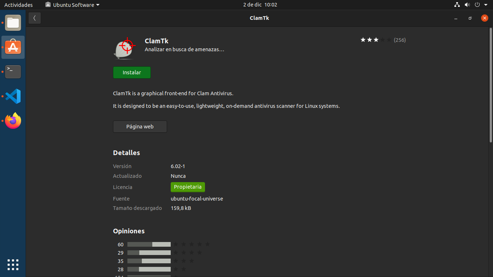
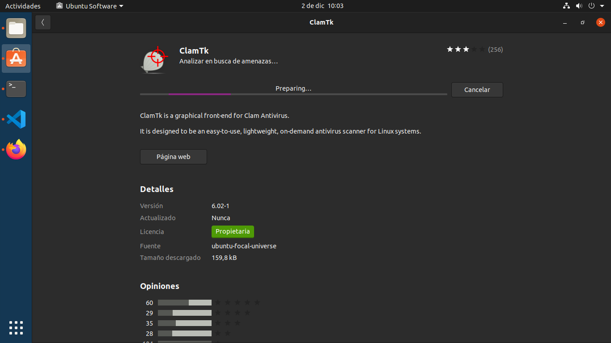

Un antivirus es un tipo de software que se utiliza para evitar, buscar, detectar y eliminar virus de una computadora. Una vez instalados, la mayoría de los software antivirus se ejecutan automáticamente en segundo plano para brindar protección en tiempo real contra ataques de virus.
Los programas integrales de protección contra virus ayudan a resguardar tus archivos y hardware de malware, como gusanos, troyanos y programas espía, y además pueden ofrecer protección adicional, como barreras de protección (firewall) personalizables y bloqueos de sitios web.
Avast Free Antivirus es uno de los antivirus más famosos del mundo. Lanzado por primera vez en 2015 de manera comercial, en tan sólo un año alcanzó gran popularidad y se convirtió en uno de los más utilizados en los PCs de los usuarios, un hecho que se debió a diferentes motivos.
Avast Free Antivirus garantiza una protección potente a la par que sencilla para nuestros equipos. De esta manera, estaremos protegidos ante los principales peligros que podamos encontrar por la red mientras navegamos.
ClamTk es un antivirus con licencia Open Source, muy bueno, liviano y bastante actualizado. Características que normalmente debe de cumplir un buen antivirus.
Existen otros antivirus para instalar en Ubuntu como Avast, Panda o Eset Nod, pero no todos llegan a ser la mitad de buenos de lo que son sus versiones para Windows. Por ejemplo, en el caso de Eset Nod, el antivirus entra en conflicto con Ubuntu y deja de funcionar el entorno gráfico de Ubuntu.
Nuestra elección del antivirus se ha basado primero en que sea gratuito, después comparando con páginas expertas se ha mirado la eficacia, rendimiento y funciones. De todos los antivirus gratuitos del mercado el que ha obtenido mejor nota ha sido el Avast Free Antivirus.